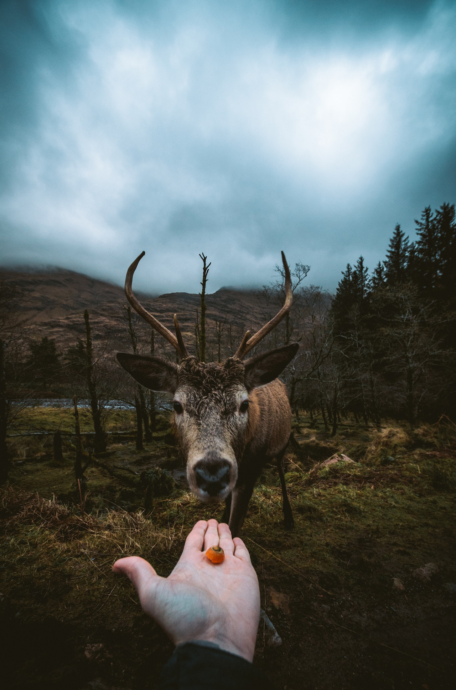
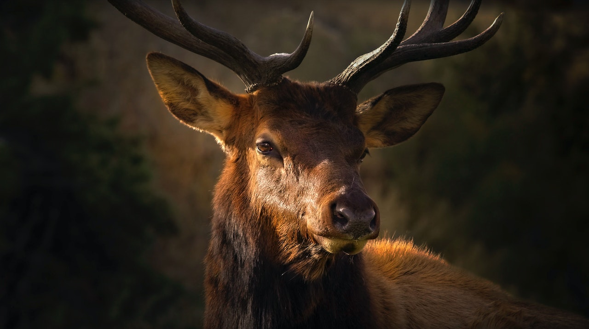

Cervo
da família cervidaeO cervo é um animal herbívoro que faz parte da família Cervidae. Existem várias espécies de cervos em todo o mundo, incluindo o veado vermelho, o veado-de-cauda-branca e o alce. Eles são conhecidos por suas belas galhadas e pela sua graça e agilidade ao correr.
Os cervos são encontrados em diversos habitats, desde florestas até áreas montanhosas. Eles se alimentam principalmente de plantas, como folhas, brotos e arbustos. Os machos desenvolvem galhadas que são utilizadas para atração de fêmeas e disputa territorial com outros machos.
O tamanho e o peso dos cervos variam dependendo da espécie. Em média, os cervos têm altura que varia de 80 a 150 centímetros, medidos a partir dos ombros. Os machos geralmente são maiores e mais pesados que as fêmeas.
O peso médio dos cervos varia entre as espécies. Por exemplo, o veado vermelho pode pesar até 250 kg, enquanto o veado-de-cauda-branca tem um peso médio de 150 kg. Esses animais têm uma expectativa de vida que varia de 10 a 15 anos na natureza.
"Os cervos são animais majestosos, símbolos de beleza e elegância na natureza."
- Surgiu: Há milhões de anos
- Tipo: Mamífero
- Idade Média: 10 anos
- Macho adulto: 200 kg
- Fêmea adulta: 150 kg
- Família: Cervidae
Os cervos são animais fascinantes que têm uma história evolutiva longa. Eles têm uma relação próxima com os seus habitats naturais e são um importante componente dos ecossistemas onde vivem.
Existem várias espécies de cervos em todo o mundo, cada uma com suas características únicas. Além das galhadas, os cervos são conhecidos por seus comportamentos de acasalamento, como a época do bramido, em que os machos emitem sons poderosos para atrair as fêmeas.